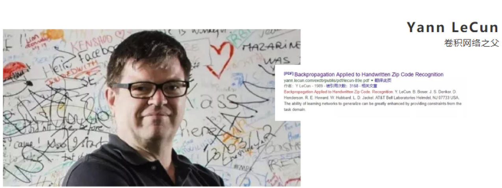
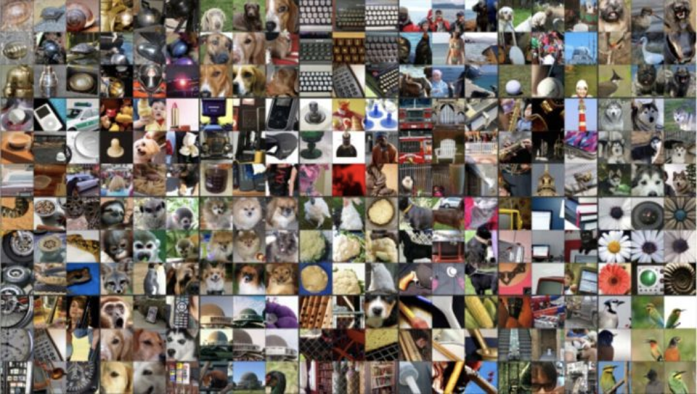

列表是由一系列按顺序排列的元素组成，列表的元素可以是字母、数字或任何东西，它们之间没有关系，用方括号（[ ]）表示列表。
人工智能概述
学习目标
- 了解人工智能在现实生活中的应用
- 知道人工只能发展必备三要素
- 知道人工智能和机器学习、深度学习三者之间的关系
1.人工智能应用场景

2.人工智能小案例
案例一
案例二
案例三
3.人工智能发展必备三要素
数据
算法
计算力
- CPU、GPU、TPU
- CPU主要适合I\O密集型的任务
- GPU主要是和计算密集型任务
提问：什么类型的程序适合在GPU上运行？
（1）计算密集型的程序。
所谓计算密集型(Compute-intensive)的程序，就是其大部分运行时间花在了寄存器运算上，寄存器的速度和处理器的速度相当，从寄存器读写数据几乎没有延时。可以做一下对比，读内存的延迟大概是几百个时钟周期；读硬盘的速度就不说了，即便是SSD, 也实在是太慢了。
（2）易于并行的程序。
GPU其实是一种SIMD(Single Instruction Multiple Data)架构， 他有成百上千个核，每一个核在同一时间最好能做同样的事情。
CPU和GPU的区别：http://www.sohu.com/a/201309334_468740
Google TPU 介绍：https://buzzorange.com/techorange/2017/09/27/what-intel-google-nvidia-microsoft-do-for-ai-chips/
4.人工智能、机器学习和深度学习

- 人工智能和机器学习、深度学习的关系
- 机器学习是人工智能的一个实现途径
- 深度学习是机器学习的一个方法发展而来
人工智能发展里历程
学习目标
了解人工智能阶段发展历程
1.人工智能的起源
1.1图灵测试
测试者与被测试者（一个人和一台机器）隔开的情况下，通过一些装置（如键盘）向被测试者随意提问。
多次测试（一般为5min之内），如果有超过30%的测试者不能确定被测试者是人还是机器，那么这台机器就通过了测试，并被认为具有人类智能。
1.2达特茅斯会议
1956年8月，在美国汉诺斯小镇宁静的达特茅斯学院中，
约翰·麦卡锡（John McCarthy）
马文·闵斯基（Marvin Minsky，人工智能与认知学专家）
克劳德·香农（Claude Shannon，信息论的创始人）
艾伦·纽厄尔（Allen Newell，计算机科学家）
赫伯特·西蒙（Herbert Simon，诺贝尔经济学奖得主）等科学家正聚在一起，讨论着一个完全不食人间烟火的主题：
用机器来模仿人类学习以及其他方面的智能。
会议足足开了两个月的时间，虽然大家没有达成普遍的共识，但是却为会议讨论的内容起了一个名字：
人工智能
因此，1956年也就成为了人工智能元年。
2.发展历程

人工智能主要分支
学习目标
了解人工智能的主要分支
通讯、感知与行动是现代人工智能的三个关键能力，在这里我们将根据这些能力/应用对这三个技术领域进行介绍：
- 计算机视觉cv
- 自然语言处理NLP
- NLP领域，覆盖文本分类/挖掘，机器翻译和语音识别
- 机器人
分支一：计算机视觉
计算机视觉（CV）是指机器感知环境的能力。这一技术类别中的经典任务有图像形成、图像处理、图像提取和图像的三维推理。物体检测和人脸识别是其比较成功的研究领域。
当前阶段：
计算机视觉现已有很多应用，这表明了这类技术的成就，也让我们将其归入到应用阶段。随着深度学习的发展，机器甚至能在特定的案例中实现超越人类的表现。但是，这项技术离社会影响阶段还有一定距离，那要等到机器能在所有场景中都达到人类的同等水平才行(感知其环境的所有相关方面)。
发展历史：
分支二：语音识别
语音识别是指识别语音(说出的语言)并将其转换成对应文本的技术。相反的任务(文本转语音/TTS)也是这一领域内一个类似的研究主题。
当前阶段：
语音识别已经处于应用阶段很长时间了。最近几年，随着大数据和深度学习技术的发展，语音识别进展颇丰，现在已经非常接近社会影响阶段了。
语音识别领域仍然面临着声纹识别和鸡尾酒会效应等一些特殊情况的难题。
现代语音识别系统严重依赖于云，在离线时可能就无法取得理想的工作效果。
分支三：文本挖掘/分类
这里的文本挖掘主要是指文本分类，该技术可用于理解、组织和分类结构化或非结构化文本文档。其涵盖的主要任务有句法分析、情绪分析和垃圾信息检测。
当前阶段：
我们将这项技术归类到应用阶段，因为现在有很多应用都已经集成了基于文本挖掘的情绪分析或垃圾信息检测技术。文本挖掘技术也在智能投顾的开发中有所应用，并且提升了用户体验。
文本挖掘和分类领域的一个瓶颈出现在歧义和有偏差的数据上。
发展历史：
分支四：机器翻译
机器翻译(MT)是利用机器的力量自动将一种自然语言(源语言)的文本翻译成另一种语言(目标语言)。
当前阶段：
机器翻译是一个见证了大量发展历程的应用领域。该领域最近由于神经机器翻译而取得了非常显著的进展，但仍然没有全面达到专业译者的水平；但是，我们相信在大数据、云计算和深度学习技术的帮助下，机器翻译很快就将进入社会影响阶段。
在某些情况下，俚语和行话等内容的翻译会比较困难(受限词表问题)。
专业领域的机器翻译(比如医疗领域)表现通常不好。
发展历史：
分支五：机器人
机器人学(Robotics)研究的是机器人的设计、制造、运作和应用，以及控制它们的计算机系统、传感反馈和信息处理。
机器人可以分成两大类:固定机器人和移动机器人。固定机器人通常被用于工业生产(比如用于装配线)。常见的移动机器人应用有货运机器人、空中机器人和自动载具。机器人需要不同部件和系统的协作才能实现最优的作业。其中在硬件上包含传感器、反应器和控制器；另外还有能够实现感知能力的软件，比如定位、地图测绘和目标识别。
机器学习工作流程
学习目标
- 了解机器学习的定义
- 知道学习的工作流程
- 掌握获取到的数据集的特性
1.什么是机器学习
机器学习是从数据中自动分析获得模型，并利用模型对未知数据进行预测。
2 机器学习工作流程

- 机器学习工作流程总结
- 获取数据
- 数据基本处理
- 特征工程
- 机器学习（模型训练）
- 模型评估
- 结果达到要求，上线服务
- 没有达到要求，重新上面步骤
2.1 获取到的数据集介绍


数据简介
一行数据我们成为一个样本
一列数据我们成为一个特征
有些数据有目标值（标签值）有些数据没有目标值
数据类型构成
数据类型一：特征值+目标值（目标值是连续的和离散的）
数据类型二：只有特征值，没有目标值
数据分割
机器学习一般的数据集会划分为两个部分：
- 训练数据：用于训练，构建模型
- 测试数据：在模型检验时使用，用于评估模型是否有效
划分比例：
训练集：70% 80% 75%
测试集：30% 20% 25%
2.2 数据基本处理
即对数据进行缺失值、去除异常值等处理
2.3 特征工程
什么是特征工程
特征工程是使用专业背景知识和技巧处理数据，使得特征能在机器学习算法上发挥更好的作用的过程。
意义：会直接影响机器学习的效果
为什么需要特征工程(Feature Engineering)
机器学习领域的大神Andrew Ng(吴恩达)老师说“Coming up with features is difficult, time-consuming, requires expert knowledge. “Applied machine learning” is basically feature engineering. ”
注：业界广泛流传：数据和特征决定了机器学习的上限，而模型和算法只是逼近这个上限而已。
特征工程包含内容
- 特征提取
- 特征预处理
- 特征降维
特征提取
- 将任意数据（如文本或图像）转换为可用于机器学习的数字特征

特征预处理
- 通过一些转换函数将特征数据转换成更加适合算法模型的特征数据过程

特征降维

2.5 模型评估
对训练好的模型进行评估
机器学习算法分类
学习目标
了解机器学习常用算法的分类
根据数据集组成不同，可以把机器学习算法分为：
监督学习
无监督学习
半监督学习
强化学习
1.监督学习
定义
输入数据是由输入特征值和目标值所组成。
输入数据是由输入特征值组成，没有目标值
- 输入数据没有被标记，也没有确定的结果。样本数据类别未知；
- 需要根据样本间的相似性对样本集进行类别划分。
有监督，无监督算法对比

3.半监督学习
定义：训练集同时包含有标记样本数据和未标记样本数据。
监督学习训练方式：
半监督学习训练方式

4.强化学习
定义：实质是make decisions 问题，即自动进行决策，并且可以做连续决策。
举例：
小孩想要走路，但在这之前，他需要先站起来，站起来之后还要保持平衡，接下来还要先迈出一条腿，是左腿还是右腿，迈出一步后还要迈出下一步。
小孩就是 agent，他试图通过采取行动（即行走）来操纵环境（行走的表面），并且从一个状态转变到另一个状态（即他走的每一步），当他完成任务的子任务（即走了几步）时，孩子得到奖励（给巧克力吃），并且当他不能走路时，就不会给巧克力。
主要包含五个元素：agent, action, reward, environment, observation；


(拓展阅读：Alphago进化史 漫画告诉你Zero为什么这么牛)[http://sports.sina.com.cn/chess/weiqi/2017-10-21/doc-ifymyyxw4023875.shtml]
总结表格
模型评估
学习目标
均方根误差（Root Mean Squared Error，RMSE）
RMSE是一个衡量回归模型误差率的常用公式。 不过，它仅能比较误差是相同单位的模型。
其他评价指标：相对平方误差（Relative Squared Error，RSE）、平均绝对误差（Mean Absolute Error，MAE)、相对绝对误差（Relative Absolute Error，RAE)
3.拟合
模型评估用于评价训练好的的模型的表现效果，其表现效果大致可以分为两类：过拟合、欠拟合。
在训练过程中，你可能会遇到如下问题：
训练数据训练的很好啊，误差也不大，为什么在测试集上面有问题呢？
当算法在某个数据集当中出现这种情况，可能就出现了拟合问题。
3.1 欠拟合

因为机器学习到的天鹅特征太少了，导致区分标准太粗糙，不能准确识别出天鹅。
欠拟合（under-fitting）：模型学习的太过粗糙，连训练集中的样本数据特征关系都没有学出来
3.1 过拟合

机器已经基本能区别天鹅和其他动物了。然后，很不巧已有的天鹅图片全是白天鹅的，于是机器经过学习后，会认为天鹅的羽毛都是白的，以后看到羽毛是黑的天鹅就会认为那不是天鹅。
过拟合（over-fitting）：所建的机器学习模型或者是深度学习模型在训练样本中表现得过于优越，导致在测试数据集中表现不佳。
Azure机器学习模型搭建实验
AML目前在微软的Global Azure云服务平台提供服务，用户可以通过站点：https://studio.azureml.net/ 申请免费试用。
深度学习简介
1.深度学习 —— 神经网络简介
深度学习（Deep Learning）（也称为深度结构学习【Deep Structured Learning】、层次学习【Hierarchical Learning】或者是深度机器学习【Deep Machine Learning】）是一类算法集合，是机器学习的一个分支。
深度学习方法近年来，在会话识别、图像识别和对象侦测等领域表现出了惊人的准确性。
但是，“深度学习”这个词语很古老，它在1986年由Dechter在机器学习领域提出，然后在2000年有Aizenberg等人引入到人工神经网络中。而现在，由于Alex Krizhevsky在2012年使用卷积网络结构赢得了ImageNet比赛之后受到大家的瞩目。
卷积网络之父：Yann LeCun

2.深度学习各层负责内容
神经网络各层负责内容：
1层：负责识别颜色及简单纹理
2层：一些神经元可以识别更加细化的纹理，布纹，刻纹，叶纹等
3层：一些神经元负责感受黑夜里的黄色烛光，高光，萤火，鸡蛋黄色等。
4层：一些神经元识别萌狗的脸，宠物形貌，圆柱体事物，七星瓢虫等的存在。
5层：一些神经元负责识别花，黑眼圈动物，鸟，键盘，原型屋顶等。

总结
- 机器学习概述
- 人工智能概述
- 人工智能起源
- 图灵测试
- 达特茅斯会议
- 人工智能起源
- 人工智能三个阶段
- 1980年代是正式成形期
- 1990-2010年代是蓬勃发展期
- 2012之后是深度学习期
- 人工智能、机器学习和深度学习
- 机器学习是人工智能的一种实现途径
- 深度学习是机器学习的一个方法发展而来
- 主要分支介绍
- 计算机视觉
- 人脸识别
- 自然语言处理
- 语音识别
- 语义识别
- 机器人
- 计算机视觉
- 人工智能必备三要素
- 数据
- 算法
- 计算力
- gpu、cpu
- gpu - 计算密集型
- cpu - io密集型
- 机器学习工作流程
- 定义（***）
- 数据
- 自动分析获取模型
- 预测
- 从数据中自动分析获取模型，并利用模型对未知数据进行预测
- 定义（***）
- 工作流程（****）
- 获取数据
- 数据基本处理
- 特征工程
- 机器学习（模型训练）
- 模型评估
- 获取到的数据集介绍（*****）
- 专有名词
- 样本
- 特征
- 目标值（标签值）
- 特征值
- 数据类型构成
- 类型一：特征值+目标值
- 目标值分为离散还是连续
- 类型二：只有特征值，没目标值
- 类型一：特征值+目标值
- 数据划分
- 训练数据 – 构建模型
- 0.7–0.8
- 测试数据 – 模型评估
- 0.2–0.3
- 训练数据 – 构建模型
- 专有名词
- 数据基本处理
- 对数进行缺失值，去除异常值处理
- 特征工程
- 定义 把数据转换为机器更容易识别的数据
- 数据和特征决定了机器学习的上限，而模型和算法只是逼近了这个上限而已
- 包含内容
- 特征提取
- 特征预处理
- 特征降维
- 机器学习 选择合适算法对模型就行训练
- 模型训练 对训练好的模型进行评估
- 机器学习算法分类
- 监督学习 – 有特征值有目标值
- 目标值连续 – 回归
- 目标值离散 – 分类
- 无监督学习 – 仅有特征值
- 半监督学习
- 有特征值，但是一部分数据有目标值，一部分没有
- 强化学习
- 动态过程，上一步数据的输入是下一步数据的输出
- 四要素
- agent
- action
- environment
- Reward
- 监督学习 – 有特征值有目标值
- 模型评估
- 分类模型评估
- 准确率
- 精确率
- 召回率
- F1-score
- AUC指标
- 回归模型评估
- 均方根误差
- 相对平方误差
- 平均绝对误差
- 相对绝对误差
- 决定系数
- 拟合
- 欠拟合
- 过拟合
- 分类模型评估
- 人工智能概述